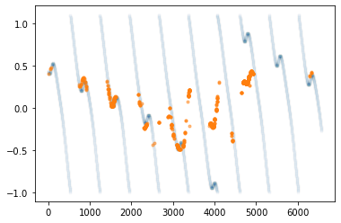

チコの天体観測
Contents
チコの天体観測¶
(1452 – 1519) Leonardo da Vinci - Wikipedia
(1473 – 1543) Nicolaus Copernicus - Wikipedia
(1546 – 1601) Tycho Brahe - Wikipedia
(1571 – 1630) Johannes Kepler - Wikipedia
(1567 – 1642) Galileo Galilei - Wikipedia


惑星の逆行¶
import solarsystem
H = solarsystem.Heliocentric(year=2020, month=1, day=1, hour=12, minute=0 )
H.planets()
{'Mercury': (263.83033031837124, -4.057599521202387, 0.4659797616165433),
'Venus': (5.228267566604352, -3.2222136733454763, 0.7262291936644325),
'Earth': (100.5289245858366, 0.0, 0.9833180862528658),
'Mars': (214.38221616457562, 0.4891253753974966, 1.5891803735433014),
'Jupiter': (276.10498313633025, 0.10374961050190847, 5.228112674603031),
'Saturn': (292.512767008796, 0.05134540100060894, 10.05212207219113),
'Uranus': (35.35030250536327, 359.5159538071305, 19.809355998647174),
'Neptune': (348.0172656026235, -1.039905299592724, 29.914939199387618),
'Pluto': (292.7499413549187, 359.3290225249272, 33.87680754878506),
'Ceres': (290.86531789432115, -5.404211011344595, 2.9204640444111933),
'Chiron': (4.327136751763591, 2.943432379699923, 18.810534112295773),
'Eris': (23.548094614031402, -11.744274334977886, 95.99830322945104)}
G = solarsystem.Geocentric(year=1584, month=1, day=1, hour=12, minute=0 )
G.position()['Mars']
(277.79300336467145, -0.8614115012318369, 2.4085976885499947)
l = []
for y in range(1583,1600):
for m in range(1,13):
for d in range(1,30):
G = solarsystem.Geocentric(year=y, month=m, day=d, hour=12, minute=0 )
l.append(G.position()['Mars'][0])
l
[110.54670806000699,
110.16787295581473,
109.78356391381628,
109.3945287639193,
109.00153400645357,
108.60536171405973,
108.20680626865511,
107.80667096459355,
107.40576451564729,
107.0048975015344,
106.60487879506202,
106.20651200724353,
105.81059199122618,
105.41790144082289,
105.02920762162127,
104.64525926590133,
104.26678366319733,
103.89448397076296,
103.52903676812653,
103.17108987146091,
102.82126042268854,
102.48013325992697,
102.14825957532226,
101.82615585808891,
101.51430312017796,
101.21314639474157,
100.9230944981028,
100.64452003938759,
100.37775966313598,
99.65120092048898,
99.43436392765742,
99.23050710816806,
99.03976698337526,
98.86225066558447,
98.69803724504641,
98.54717923073082,
98.40970402965412,
98.2856154477501,
98.17489519952414,
98.07750441239294,
97.99338511598835,
97.92246170524669,
97.86464237010796,
97.81982048340406,
97.78787594245927,
97.76867645842583,
97.76207879084119,
97.76792992354511,
97.78606818121912,
97.81632428501975,
97.85852234652441,
97.9124808012007,
97.97801328106802,
98.05492942865882,
98.14303565276562,
98.24213582883802,
98.35203194507112,
98.47252469723563,
98.47252469723563,
98.60341403364968,
98.74449965366513,
98.89558146124187,
99.0564599768506,
99.22693670933619,
99.4068144910539,
99.59589777787097,
99.79399291704263,
100.00090838446245,
100.2164549942478,
100.44044608202,
100.67269766446941,
100.91302857642224,
101.16126058790208,
101.4172185022341,
101.68073023731804,
101.95162689096313,
102.22974279231627,
102.51491554012098,
102.80698602949506,
103.10579846782937,
103.4112003814256,
103.72304261334142,
104.0411793137598,
104.36546792324111,
104.695769150134,
105.0319469424008,
105.37386845486799,
106.43281416093332,
106.79644486960774,
107.16520176185965,
107.53897034528191,
107.917639014768,
108.30109899897025,
108.68924430585356,
109.0819716674701,
109.47918048425488,
109.88077276890824,
110.28665309023809,
110.69672851697374,
111.11090856179413,
111.52910512554197,
111.95123244194686,
112.37720702278767,
112.80694760370211,
113.24037509054216,
113.6774125065731,
114.11798494037835,
114.56201949466671,
115.00944523582183,
115.46019314447842,
115.91419606694039,
116.37138866763176,
116.83170738237722,
117.29509037279209,
117.7614774815637,
118.2308101888119,
119.17808625075382,
119.6559203731116,
120.1364815487831,
120.61971882377728,
121.1055826399135,
121.59402479788822,
122.08499842133531,
122.57845792172905,
123.0743589642481,
123.57265843451509,
124.0733144062139,
124.57628610951505,
125.08153390038024,
125.58901923068615,
126.09870461914602,
126.61055362297905,
127.12453081036834,
127.640601733734,
128.15873290357433,
128.6788917631915,
129.2010466639748,
129.72516684149556,
130.25122239208264,
130.7791842502184,
131.30902416641555,
131.84071468584446,
132.37422912736778,
132.9095415633325,
133.44662679977512,
135.06827797919172,
135.61221649194567,
136.15781218783079,
136.70504389017407,
137.2538910322947,
137.8043336416347,
138.3563523244761,
138.90992825087943,
139.46504314022445,
140.0216792469814,
140.57981934702622,
141.1394467241256,
141.7005451569809,
142.26309890645564,
142.82709270330557,
143.39251173603373,
143.95934163926648,
144.5275684822692,
145.0971787579294,
145.6681593718238,
146.240497631773,
146.81418123749643,
147.3891982707037,
147.96553718523342,
148.5431867976499,
149.12213627790481,
149.7023751404084,
150.28389323511527,
150.8666807390414,
152.03602626761673,
152.6225662070945,
153.2103393696924,
153.7993374460275,
154.389552406505,
154.98097649406492,
155.5736022171788,
156.16742234293235,
156.7624298903147,
157.3586181236164,
157.95598054606077,
158.5545108934975,
159.15420312828886,
159.75505143328147,
160.35705020599832,
160.9601940528709,
161.56447778364372,
162.16989640589688,
162.77644511963382,
163.38411931212417,
163.99291455263733,
164.6028265875114,
165.2138513351309,
165.82598488119993,
166.43922347388343,
167.05356351927205,
167.66900157674263,
168.2855343546032,
168.9031587055936,
170.76255180289976,
171.3845137154219,
172.00755348485944,
172.63166874350372,
173.25685723976267,
173.88311683425513,
174.51044549620812,
175.1388412997122,
175.76830242024135,
176.39882713099541,
177.03041379953623,
177.663060884275,
178.2967669312185,
178.93153057052822,
179.56735051336122,
180.20422554860338,
180.84215453973263,
181.4811364216527,
182.12117019768183,
182.76225493647397,
183.40438976905995,
184.04757388585156,
184.6918065337967,
185.33708701346163,
185.98341467622902,
186.63078892145404,
187.27920919376746,
187.92867498030108,
188.57918580802658,
190.53698434955598,
191.19167131560798,
191.8474014629489,
192.5041745026981,
193.1619901677939,
193.82084821057188,
194.48074840028505,
195.14169052076906,
195.8036743680128,
196.4666997478403,
197.13076647352983,
197.79587436357758,
198.46202323936424,
199.12921292293015,
199.79744323468685,
200.46671399127135,
201.13702500329987,
201.80837607323173,
202.48076699316533,
203.1541975427763,
203.82866748715537,
204.5041765747523,
205.18072453525318,
205.85831107759824,
206.53693588789693,
207.21659862745145,
207.89729893069983,
208.57903640334396,
209.26181062030784,
210.63046742145738,
211.31634898438287,
212.00326524530553,
212.69121559665805,
213.3801993888022,
214.0702159281449,
214.76126447536575,
215.45334424356895,
216.14645439658116,
216.8405940471408,
217.53576225519691,
218.2319580261347,
218.92918030914674,
219.62742799549443,
220.3266999168819,
221.0269948437546,
221.7283114837451,
222.43064848000984,
223.13400440967803,
223.8383777822262,
224.54376703800094,
225.25017054663272,
225.95758660556274,
226.66601343849592,
227.3754491940038,
228.0858919440177,
228.79733968243747,
229.50979032366612,
230.22324170129625,
232.36957734710384,
233.08700834178495,
233.8054279809724,
234.52483358524265,
235.24522238518568,
235.96659152027112,
236.68893803760608,
237.41225889081312,
238.1365509388367,
238.8618109449062,
239.5880355753921,
240.3152213987846,
241.04336488459018,
241.77246240244585,
242.5025102209857,
243.23350450701793,
243.96544132448258,
244.6983166336833,
245.43212629026524,
246.1668660445028,
246.90253154037185,
247.6391183148962,
248.37662179724185,
249.11503730812422,
249.8543600589993,
250.5945851515333,
251.33570757681863,
252.07772221490794,
252.82062383413052,
254.30906652801974,
255.05459657642905,
255.80099155257318,
256.54824565917886,
257.2963529845282,
258.045307502264,
258.7951030709806,
259.54573343410107,
260.2971922195034,
261.049472939459,
261.80256899043155,
262.55647365296966,
263.3111800916651,
264.06668135506146,
264.8229703757406,
265.58003997030914,
266.3378828395255,
267.09649156836684,
267.8558586262748,
268.615976367303,
269.37683703040693,
270.13843273967325,
270.90075550473114,
271.6637972210659,
272.4275496704756,
273.192004521459,
273.9571533298451,
274.7229875391799,
275.4894984814504,
277.79300336467145,
278.5621323488841,
279.3318930751319,
280.102276220478,
280.8732723556187,
281.644871945958,
282.41706535246954,
283.1898428328603,
283.96319454248084,
284.7371105355768,
285.51158076632606,
286.28659509017785,
287.0621432649379,
287.83821495219354,
288.61479971852543,
289.3918870370188,
290.16946628852065,
290.9475267632357,
291.7260576621077,
292.5050480984994,
293.28448709961634,
294.0643636082682,
294.84466648441446,
295.6253845070058,
296.4065063755678,
297.1880207121208,
297.9699160628807,
298.752180900254,
299.53480362457265,
301.8847020837858,
302.6686389879565,
303.4528747697466,
304.23739743924045,
305.02219494882524,
305.807255195191,
306.59256602164703,
307.37811522027084,
308.16389053418885,
308.9498796597873,
309.7360702490863,
310.52244991199854,
311.3090062187086,
312.09572670197696,
312.8825988596006,
313.669610156757,
314.4567480284604,
315.2439998819397,
316.03135309916746,
316.8187950392663,
317.60631304101116,
318.3938944253208,
319.18152649769763,
319.9691965508612,
320.75689186710036,
321.54459972093025,
322.33230738149496,
323.1200021152316,
323.907671188234,
324.6953018689173,
325.48288143042055,
326.2703971532646,
327.0578363277056,
327.8451862563802,
328.6324342566858,
329.4195676634079,
330.20657383103725,
330.9934401363738,
331.78015398085785,
332.56670279314375,
333.35307403135624,
334.1392551856282,
334.9252337803589,
335.7109973767092,
336.4965335747742,
337.28183001602963,
338.0668743854945,
338.85165441412397,
339.63615788087424,
340.42037261503583,
341.20428649827664,
341.98788746691105,
342.7711635138343,
343.5541026907098,
344.3366931099245,
345.11892294660765,
345.90078044051876,
346.68225389802694,
349.02425415304043,
349.8040759241462,
350.58345625281015,
351.362383882373,
352.1408476347972,
352.9188364122806,
353.69633919868943,
354.4733450610303,
355.2498431507804,
356.02582270529626,
356.80127304903885,
357.57618359483325,
358.35054384498574,
359.1243433924743,
359.8975719219546,
0.6702192107972567,
1.4422751299801877,
2.2137296450527426,
2.9845728169124244,
3.754794802611641,
4.524385856017702,
5.293336328542275,
6.061636669683479,
6.829277427594871,
7.596249249508065,
8.362542882222765,
9.12814917240868,
9.893059066934121,
10.657263613046947,
12.183521352224137,
12.945557143187322,
13.706852781559707,
14.467399818093819,
15.227189904122522,
15.986214791273735,
16.7444663313322,
17.501936475865467,
18.25861727588611,
19.014500881367915,
19.769579540828563,
20.523845600726585,
21.277291504884538,
22.029909793768294,
22.781693103831845,
23.532634166679767,
24.28272580825472,
25.031960947884077,
25.78033259739199,
26.527833860030917,
27.274457929439517,
28.020198088460642,
28.7650477080264,
29.509000245864005,
30.252049245228925,
30.994188333500976,
31.735411220846515,
32.4757116987053,
33.21508363830429,
35.42756810281288,
36.163166140824174,
36.89780613637378,
37.63148240448124,
38.364189327818515,
39.095921354803195,
39.8266729975592,
40.55643882994681,
41.28521348542222,
42.012991654926715,
42.739768084645874,
43.46553757383735,
44.190294972490584,
44.91403517901577,
45.63675313780437,
46.35844383685834,
47.079102305251915,
47.79872361062314,
48.51730285652785,
49.234835179920026,
49.95131574832071,
50.6667397572087,
51.38110242713081,
52.09439900099352,
52.80662474103563,
53.517774926020884,
54.22784484815035,
54.93682981015436,
55.64472512206651,
57.057228053931766,
57.761826302444796,
58.46531615144439,
59.16769289986872,
59.86895183440842,
60.56908822618324,
61.26809732710226,
61.965974366432235,
62.66271454708664,
63.358313042082884,
64.05276499068108,
64.74606549472709,
65.43820961471404,
66.12919236600743,
66.81900871474957,
67.50765357395322,
68.1951217993715,
68.88140818536334,
69.56650746070017,
70.25041428424933,
70.93312324069572,
71.6146288360899,
72.29492549339244,
72.97400754788111,
73.65186924258774,
74.32850472355769,
75.0039080350975,
75.67807311487913,
76.3509937890668,
78.36222586060876,
79.03010476584552,
79.69670654462489,
80.36202424551645,
81.02605076855279,
81.68877885968061,
82.35020110487324,
83.01030992438534,
83.66909756669344,
84.32655610253398,
84.98267741858389,
85.63745321126967,
86.29087498025095,
86.9429340219869,
87.5936214229339,
88.24292805285533,
88.89084455779317,
89.53736135310618,
90.18246861612502,
90.82615627890137,
91.4684140206057,
92.1092312599697,
92.74859714733277,
93.3865005567598,
94.02293007779163,
94.65787400721885,
95.29132034043994,
95.92325676286904,
96.55367064095608,
98.43564569799699,
99.059836362745,
99.68243620642724,
100.30343048378022,
100.92280406254906,
101.54054141275314,
102.15662659588769,
102.77104325363987,
103.38377459656337,
103.99480339228991,
104.60411195364219,
105.21168212623087,
105.81749527597053,
106.42153227610197,
107.02377349407372,
107.62419877787494,
108.22278744223259,
108.81951825433909,
109.41436941924688,
110.00731856486945,
110.59834272665536,
111.1874183318078,
111.77452118311288,
112.35962644233035,
112.94270861320481,
113.52374152397782,
114.10269830944499,
114.67955139257006,
115.25427246555385,
116.39720157953069,
116.96534917416967,
117.53124382455935,
118.0948532678735,
118.65614438611844,
119.21508318351344,
119.77163476311019,
120.32576330294415,
120.87743203135588,
121.42660320184913,
121.9732380671307,
122.51729685261299,
123.05873872902639,
123.59752178450121,
124.13360299577288,
124.66693819878111,
125.19748205832312,
125.72518803710975,
126.25000836389223,
126.77189400091916,
127.29079461039944,
127.806658520309,
128.31943268922726,
128.8290626704524,
129.33549257508832,
129.83866503443434,
130.33852116138425,
130.83500051107305,
131.32804104049097,
132.7858844351972,
133.2645158327606,
133.73937275277618,
134.21038266935025,
134.6774711526056,
135.14056182182978,
135.59957629787024,
136.0544341549136,
136.50505287155656,
136.95134778142727,
137.39323202327063,
137.8306164906948,
138.26340978149878,
138.69151814691176,
139.11484544067264,
139.53329306823395,
139.94675993602402,
140.35514240120452,
140.7583342218756,
141.15622650812318,
141.54870767388584,
141.9356633901985,
142.31697653982482,
142.69252717380945,
143.0621924699947,
143.42584669422328,
143.78336116432212,
144.1346042175771,
144.4794411818482,
145.14934296662796,
145.47412320173493,
145.79192815545963,
146.1026078512368,
146.40600924406124,
146.7019762363194,
146.99034970292655,
147.27096752727627,
147.5436646486193,
147.80827312237653,
148.0646221943046,
148.31253839003378,
148.55184562134622,
148.78236531058027,
149.00391653477234,
149.21631619117258,
149.41937918606496,
149.61291864820487,
149.7967461694573,
149.97067207395648,
150.13450571842895,
150.28805582508298,
150.43113084998342,
150.5635393883574,
150.68509061969147,
150.7955947940235,
150.8948637624333,
150.9827115529997,
151.05895499496776,
151.21628404294742,
151.2443590671099,
151.25998130532193,
151.2630003795003,
151.25327454488618,
151.23067174134152,
151.19507069726353,
151.14636208531329,
151.0844497261013,
151.00925183723803,
150.92070232199222,
150.81875209320205,
150.70337042449552,
150.5745463220612,
150.4322899065786,
150.27663379632858,
150.10763447853464,
149.9253736573151,
149.72995956277663,
149.52152820753386,
149.3002445729826,
149.0663037095437,
148.81993173156826,
148.56138669020706,
148.29095930421144,
148.00897353171078,
147.71578696341916,
147.41179102181738,
147.09741094895284,
146.09671900880244,
145.74571787774107,
145.38694933163043,
145.02102796534416,
144.6485953145473,
144.27031786262717,
143.88688481240555,
143.49900563728602,
143.10740743199491,
142.71283208479684,
142.31603329828738,
141.9177734870445,
141.5188205844955,
141.1199447911855,
140.7219152997303,
140.32549703049497,
139.93144741352646,
139.5405132494203,
139.15342768218554,
138.77090731335716,
138.39364948524792,
138.02232975738954,
137.65759959588812,
137.30008429415807,
136.95038113614638,
136.60905781261312,
136.27665109361124,
135.95366576015974,
135.64057379085344,
135.64057379085344,
135.33781379921555,
135.045790711273,
134.76487567376276,
134.49540617768713,
134.2376863833738,
133.99198762866774,
133.75854910425883,
133.53757867627465,
133.32925383908145,
133.13372277835626,
132.95110552798695,
132.78149520208362,
132.62495928634414,
132.48154097261607,
132.35126052276073,
132.23411664780335,
132.13008789087388,
132.03913400264986,
131.9611973002679,
131.89620400075546,
131.84406552233222,
131.80467974717297,
131.77793224113,
131.76369742590992,
131.76183970107243,
131.7722145132827,
131.7946693717148,
131.82904480829313,
132.00201387194824,
132.08236792721283,
132.17377033553453,
132.27603688121508,
132.3889815886289,
132.51241726756368,
132.646156014115,
132.79000966909635,
132.94379023634804,
133.10731026285185,
133.28038318302274,
133.4628236292263,
133.65444771079626,
133.85507326339385,
134.06452007084656,
134.2826100613346,
134.5091674798833,
134.74401903876455,
134.98699404757534,
135.23792452458343,
135.49664529090956,
135.76299404885225,
136.03681144574523,
136.31794112462578,
136.60622976291745,
136.90152710014755,
137.20368595573058,
137.5125622378197,
137.82801494419266,
138.47810102319815,
138.81246774916414,
139.15287756345674,
139.49920469495962,
139.85132633913847,
140.2091226220386,
140.57247656127169,
140.94127402428506,
141.31540368445198,
141.69475697522526,
142.07922804272843,
142.4687136969557,
142.86311336201524,
143.2623290255221,
143.6662651874354,
144.07482880839308,
144.48792925791182,
144.9054782624509,
145.3273898535914,
145.75358031628235,
146.18396813748993,
146.61847395516054,
147.0570205077241,
147.49953258401712,
147.94593697393796,
148.39616241968588,
148.8501395677901,
149.30780092176232,
149.7690807956675,
151.1740008824136,
151.6491326066215,
152.12758001028737,
152.60928734149223,
153.09420035719907,
153.58226628375473,
154.07343377817548,
154.56765289042482,
155.06487502641764,
155.5650529120416,
156.06814055798833,
156.57409322539758,
157.08286739238912,
157.59442072142133,
158.10871202746378,
158.62570124693306,
159.14534940745173,
159.66761859838505,
160.19247194212636,
160.71987356609142,
161.24978857546748,
161.78218302668336,
162.31702390155672,
162.85427908209587,
163.3939173259801,
163.93590824270763,
164.48022227034645,
165.0268306528835,
165.57570541818083,
166.68014599982538,
167.23565960106137,
167.7933351146648,
168.35314817716255,
168.9150750884047,
169.4790927932666,
170.04517886382527,
170.61331148204525,
171.1834694228682,
171.7556320377507,
172.32977923861682,
172.90589148227377,
173.4839497551766,
174.06393555859788,
174.64583089415794,
175.22961824977773,
175.81528058592983,
176.40280132224748,
176.99216432449154,
177.58335389178356,
178.1763547442843,
178.7711520109733,
179.36773121792686,
179.96607827676388,
180.56617947340672,
181.16802145708277,
181.77159122965543,
182.3768761351403,
182.98386384949933,
184.8149253765931,
185.42860738052914,
186.0439352110838,
186.66089833426426,
187.27948648280997,
187.8996896477077,
188.5214980698504,
189.1449022319572,
189.76989285058642,
190.39646086836524,
191.02459744633686,
191.65429395655104,
192.28554197472633,
192.91833327311016,
193.55265981343635,
194.18851374011055,
194.8258873734461,
195.4647732030853,
196.1051638814966,
196.74705221768903,
197.39043117095827,
198.0352938448047,
198.68163348091355,
199.32944345333885,
199.97871726270355,
200.62944853056266,
201.28163099381237,
201.9352584992955,
202.5903249984066,
204.5640994301302,
205.22486332683778,
205.88703736174023,
206.55061600631137,
207.21559380171158,
207.88196535399962,
208.54972532967074,
209.21886845105868,
209.88938949202685,
210.5612832734799,
211.23454465920162,
211.90916855154495,
212.58514988740882,
213.26248363402897,
213.94116478508857,
214.62118835667727,
215.30254938353232,
215.98524291508753,
216.66926401184068,
217.35460774156192,
218.04126917578412,
218.72924338609394,
219.41852544074126,
220.10911040108346,
220.80099331831198,
221.49416922997432,
222.18863315681313,
222.88438009943823,
223.58140503526744,
224.97926866118374,
225.68009716202124,
226.38218327161482,
227.08552180547662,
227.79010753796106,
228.49593519954266,
229.20299947403004,
229.91129499591398,
230.62081634768836,
231.331558057342,
232.0435145957856,
232.75668037441434,
233.47104974264028,
234.1866169855991,
234.90337632179092,
235.62132190085643,
236.34044780132405,
237.06074802853237,
237.78221651248705,
238.50484710585255,
239.2286335819079,
239.9535696327364,
240.67964886720375,
241.4068648092686,
242.13521089611024,
242.86468047655114,
243.59526680925876,
244.3269630612815,
245.0597623064026,
247.2647073098906,
248.00184735090568,
248.74005430626545,
249.47932066147615,
250.21963879976613,
250.96100100090743,
251.70339944034112,
252.446826188081,
253.19127320796113,
253.93673235670076,
254.6831953832749,
255.4306539280642,
256.17909952235027,
256.92852358762923,
...]
len(l)
5916
import matplotlib.pyplot as plt
import numpy as np
np.radians(l)
array([1.92940403, 1.92279211, 1.91608465, ..., 2.41407093, 2.41289642,
2.4114855 ])
plt.plot(range(5916), -np.radians(l))
[<matplotlib.lines.Line2D at 0x12d5fcbb0>]

位相アンラップ処理をして逆行だけを取り出す¶
火星の公転周期: 687日
約1年11ヶ月で逆行が観測できる
plt.plot(range(5916), np.unwrap(np.radians(l))-np.linspace(0,57,num=5916))
[<matplotlib.lines.Line2D at 0x12d52adf0>]

時間指定が厄介なので、他のソフトを使う¶
import ephem
import matplotlib.pyplot as plt
import numpy as np
m = ephem.Mars()
m.compute('1584/1/1')
# 日心経度, 日心緯度
m.hlon, m.hlat
(4.880208969116211, -0.02591746859252453)
m0 = ephem.Mars(ephem.Date('1584/1/1'))
m1 = ephem.Mars(ephem.Date('1584/1/1')+1)
def hops(body): return body.hlon, body.hlat
ephem.separation(hops(m0), hops(m1))
0.010442553936505066
# 赤経, 赤緯
m.ra, m.dec
(4.89811066895129, -0.4190875793738444)
d = ephem.Date('1582/11/1')
l = []
for _ in range(1,365*(1600-1582)):
m0 = ephem.Mars(ephem.Date(d))
l.append(m0.ra)
d+=1
l;
len(l)
6569
#plt.plot(range(len(l)), np.unwrap(l)-np.linspace(0,60,num=len(l)))
plt.plot(range(len(l)), -np.array(l))
[<matplotlib.lines.Line2D at 0x107e25d60>]

チコの観測の検証¶
import pandas as pd
import datetime
df = pd.read_excel('http://www.pafko.com/tycho/mars.xls', header=5)
df
| Unnamed: 0 | Year | Day | Time | Quote | Volume | Page | Unnamed: 7 | Year.1 | Month | ... | Day (adj) | Hour | Min | Days since 1 AD | Date | Unnamed: 16 | Dec (deg) | Dec (min) | Dec (sec) | Declination | |
|---|---|---|---|---|---|---|---|---|---|---|---|---|---|---|---|---|---|---|---|---|---|
| 0 | NaN | 1582 | DIE 12 NOUEMBRIS, MANE. | NaN | Declinatio [MS] 23 7 B | 10 | 174 | NaN | 1582 | 11 | ... | 22 | NaN | NaN | 578150.500000 | 1582.889802 | 1 | 23 | 7 | NaN | 23.116667 |
| 1 | NaN | 1582 | DIE 30 DECEMBRIS | NaN | Afc. R. [MS] 107o 56' Declin. 26o 36' B. | 10 | 197 | NaN | 1582 | 12 | ... | 40 | NaN | NaN | 578198.500000 | 1583.021218 | 1 | 26 | 56 | NaN | 26.933333 |
| 2 | NaN | 1582 | DIE 27 DECEMBRIS | NaN | declinatio [MS] 26o 22 1/3' et Afcenfio Recta... | 10 | 200 | NaN | 1582 | 12 | ... | 37 | NaN | NaN | 578195.500000 | 1583.013005 | 1 | 26 | 22 | 20.0 | 26.372222 |
| 3 | NaN | 1583 | DIE 18 JANUARIJ, VESPERI. | NaN | Declinatio 27 18 minus bona | 10 | 244 | NaN | 1583 | 1 | ... | 28 | NaN | NaN | 578217.500000 | 1583.073238 | 1 | 27 | 18 | NaN | 27.300000 |
| 4 | NaN | 1584 | DIE 13 NOUEMBRIS, A.M. | H.13 26 P.M. | Declinatio [MS] B. 15 54 | 10 | 321 | NaN | 1584 | 11 | ... | 23 | 13.0 | 26.0 | 578883.059722 | 1584.895441 | 1 | 15 | 54 | NaN | 15.900000 |
| ... | ... | ... | ... | ... | ... | ... | ... | ... | ... | ... | ... | ... | ... | ... | ... | ... | ... | ... | ... | ... | ... |
| 918 | NaN | 1600 | 24 Januarij. | NaN | Declinatio [MS] 21 56 10 B. | 13 | 221 | NaN | 1600 | 1 | ... | 34 | 10.0 | NaN | 584432.916667 | 1600.090121 | 1 | 21 | 56 | 10.0 | 21.936111 |
| 919 | NaN | 1600 | Die 2 Martij. | H.10 P.M. | Declinatio [MS] 24 8 0 B. | 13 | 224 | NaN | 1600 | 3 | ... | 12 | 10.0 | NaN | 584470.916667 | 1600.194159 | 1 | 24 | 8 | 0.0 | 24.133333 |
| 920 | NaN | 1600 | Die 9 Martij | H.9 1/2 P.M. | Declinatio [MS] 23 59 0 | 13 | 224 | NaN | 1600 | 3 | ... | 19 | 9.0 | NaN | 584477.875000 | 1600.213210 | 1 | 23 | 59 | 0.0 | 23.983333 |
| 921 | NaN | 1600 | Die 15 Martij | H.9 1/3 | Declinatio [MS] 23 41 40 | 13 | 224 | NaN | 1600 | 3 | ... | 25 | 9.0 | NaN | 584483.875000 | 1600.229637 | 1 | 23 | 41 | 40.0 | 23.694444 |
| 922 | NaN | 1600 | Die 16 Martij | H. 9 1/4 | Declinatio [MS] 23 37 30 | 13 | 224 | NaN | 1600 | 3 | ... | 26 | 9.0 | NaN | 584484.875000 | 1600.232375 | 1 | 23 | 37 | 30.0 | 23.625000 |
923 rows × 21 columns
print(ephem.Date(ephem.Date(datetime.datetime(1584,11,23,13,26))+(584484.88-578883.06)))
1600/3/26 09:06:48
df2=df.iloc[:,[14,20]]
df2.set_index('Days since 1 AD', inplace=True)
#df2.index.values - df2.index.values[0]
#df2.iloc[:,0].values
plt.scatter(range(len(l)), -np.array(l)/3+1.1, marker='.', alpha=0.01)
plt.scatter(df2.index.values - df2.index.values[0],
np.radians(df2.iloc[:,0].values),
c=None, marker='.', alpha=.5)
plt.show()

後半のデータを修正･･･
import bisect
bisect.bisect(df2.index.values - df2.index.values[0], 3000)
249
x=np.concatenate([
df2.iloc[:268,0].values,
df2.iloc[268,0] * 2 - df2.iloc[268:,0].values])
plt.scatter(range(len(l)), -np.array(l)/3+1.1, marker='.', alpha=0.01)
plt.scatter(df2.index.values - df2.index.values[0],
np.radians(x),
c=None, marker='.', alpha=.5)
plt.show()